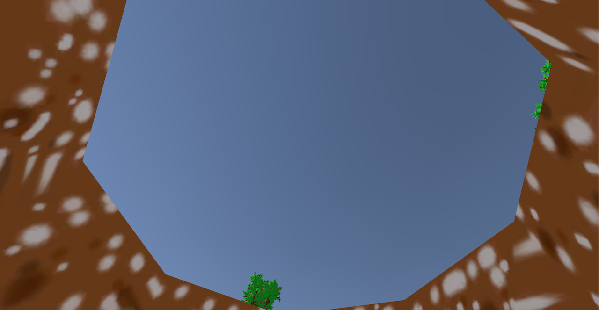
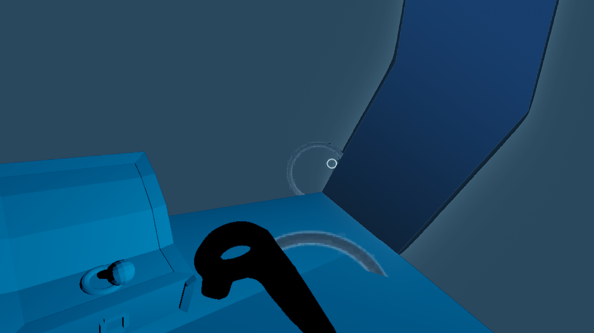
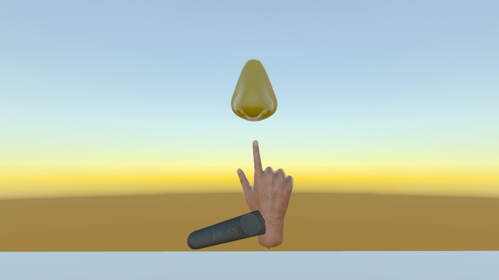
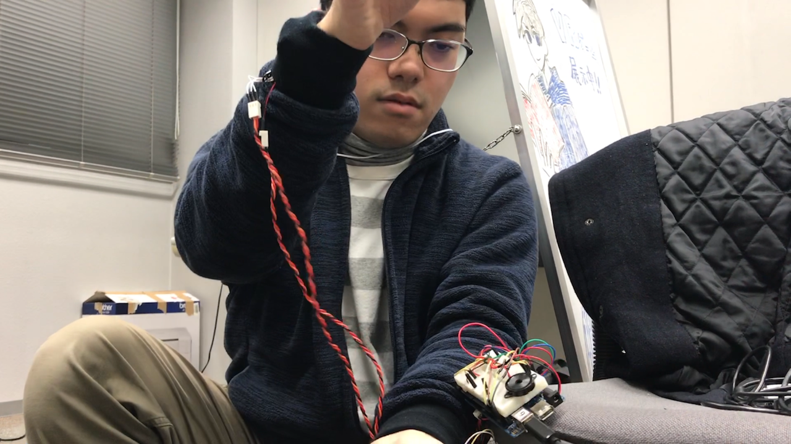

山形大学VR部代表の髙木直人です。
2019年2月16日・17日に行われたハッカソン、第一回ANYハッカソンの報告をします。
予定が合わなくて参加出来なかった人や、第二回の参加を検討している人の参考になれば幸いです。
2018年10月27日に、VRプラットフォームのclusterで行われた「全国学生VRサークル活動報告大会2018」で会津大学、新潟大学のVRサークルと繋がったのがきっかけです。その後、会津大学のVRサークルがハッカソンを企画し、それに新潟大学と山形大学のVRサークルが乗っかって共同開催になりました。
Discord上で1,2週間に1回のペースでミーティングを行い、当日会津大学に集合してから顔合わせでしたが、滞りなく運営できてよかったです。現代的ですね。
参加者は36人（全日程チーム参加は28人）でした。
内訳は、
です。
エンジニア・デザイナー（モデラー・エフェクター）、プランナーもまんべんなく参加していて、新潟・南東北の人材の層の厚さに驚きました。
小雪が舞うあいにくの天気でしたが、事故もなく学生・運営メンバーが集合。続々と運び込まれるVR機器。VIVEだけで6台くらいあったと思います。片付けのときに混ざりそうで大変だったので、次はネームタグを用意したほうが良いですね。
土曜日の午前中はUnityの中の人がUnityの最新事情を教えてくれる講義を行いました。お昼ご飯で会津大学の学食に参加者が一斉に押し寄せた結果、食べ物がほとんど売り切れるという問題が発生したのがちょっとした改善点です。あと、どうしても同じ大学同士でまとまってしまったので、お昼ご飯の前にアイスブレイクをはさんでランチで交流できるようにしたかったですね。
午後はアイデアブレスト・チームビルディングを1時間程度で終わらせて、その後すぐに開発に移行しました。参加者のハッカソンへのリテラシーが高くて、アイデアが滞ることもなく、チーム分けで大きな偏りが生まれることもなくて助けられました。開発時間が多くとれたのは非常に良かったです。
アイデア出しと、チームビルディング完了しました！これから実装に向けてひたすら開発！ pic.twitter.com/i7EVvqx0wI
— any_hackathon (@any_hackathon) 2019年2月16日
タイムテーブル上では17時に区切りを設けて、残って開発したいチームは24時まで教室が使えるようにする手筈だったのですが、その説明を入れるタイミングを逃してしまい、全チーム遅くまで開発しなければならないような雰囲気になっていたかもしれないと少し 反省しています。黙々とコードを書くチームが多くて、集中力がすごかったのでついそのまま放置してしまいました。
夜、遠隔参加のチームは民宿的な場所に泊まったのですが、突発的にライブコーディング講座が始まったり情報交換会をしたりと、有意義な時間を過ごしてもらえたようで良かったです。次回の開催でもこのあたりの仕掛けは継続したいですね。
日曜日は朝1分間で各チームの進捗を全体と共有する時間を設けて、それが終わったら15時までぶっ続けで開発としました。他のチームとの進捗の差を知ることで、自分たちのチームがどのくらいのスケジュール感で進めているのかを把握してもらいたい意図で設定したアクティビティでしたが、どのくらいの学生が役に立ったか未知数なところが気になります。後でアンケートしてみます。
会津大学のWi-FiからYouTube Liveでの配信が出来なかったり、Discordへのログインが制限されたりとトラブル続きでしたが、なんとかバーチャル空間と通信が確立できて当初の予定通り審査員にバーチャルの住人を呼べたのがいちばんほっとしたポイントです。
開発終わりです！
— any_hackathon (@any_hackathon) 2019年2月17日
現在最終プレゼン中。審査員としてらげたげさんが遠隔参加してくれましたー！みなさんお疲れ様です。 pic.twitter.com/pNhPSGNJkT
新潟大学チーム「時間差VRパズル」
プラットフォーム：SteamVR
メンバーの大学こそ同じでしたが、初顔合わせの比率が多かったチームです。時間差パズル自体は新しいアイデアではありませんが、VR空間でそれを行うことで自分の操作するアバターを客観的に見ることができるところに面白さがありました。ハッカソンの最優秀賞にふさわしい、VRならではの面白さを高い完成度で実現したアプリです。
会津大学・山形大学 焚火チーム 「焚火VR」
プラットフォーム：Oculus Go
 引用：ぐっちーの駄弁り部屋
引用：ぐっちーの駄弁り部屋
暖炉の前に座って、焚火に薪をくべるゲームです。3DoFであったり描画の制約がある中、炎を眺めながらリラックスする体験をうまく再現していた部分が高評価でした。開発の進め方も素晴らしく、一日目にはシステムを完成させ、二日目でディテールを詰めて完成度を高めるという手法は多くのチームが見習うべきところです。審査員の満場一致で特別賞となりました。Oculusストアで配信予定とのこと。
・穴掘りVR

ひたすら直下掘りするゲームです。マイクラ経験者だからか、筆者としてはいちばん面白かったです（※個人の感想です）。掘る動作を検知すると穴が深くなっていくのですが、どのくらいの加速度で振れば掘り動作として検知されるかのパラメータ設定が絶妙でした。穴の底まで到達するタイムを競う形式にしたのも、やりこみ要素として良かったです。
・潜水艦VR

3Dでの表現が難しい水中という環境、アセットが存在しない深海魚のモデルなど、最もチャレンジングな開発をしていたチームです。途中で方針転換をして、ビジュアルよりゲーム要素を増やす選択をしたものの、開発時間が足りなかったとのこと。2日間大変だったと思いますが、最も多くの学びを得られたチームではないでしょうか。
・メイドインVR

複数のVRミニゲームがまとめて遊べるゲームです。技術力トップクラスのチームでした。著作権的にちょっと怪しいので、残念ながら詳細にふれることができません……。
・ハードウェアLovers

VRゲームを、HMDをかぶっていない周りの人も楽しむことができないか、という問題意識のもと、手につけたセンサーでジェスチャーを検知してコマンド入力をするゲームを開発したチームです。ハードとソフトを両方開発する必要があったので、時間的に厳しいものがあったようです。ハードの方は完成していたので、技術デモとして面白い作品でした。
筆者としては、学生一人ひとりのレベルの高さに終始感動していました。また、参加者同士で様々な得意分野の技術を教えあい、全体の技術力が底上げされる機会となったと思います。
また、このハッカソンをきっかけに様々なイベントやプロジェクトが大学間をまたいで始まっており、これからも継続的にハッカソンを開催していく必要性を強く感じました。
第二回ハッカソンは、2019年夏ごろ、山形大学米沢キャンパスで行う予定です。
参加受付は開催2ヶ月前ころから始める予定です。
ANYハッカソン実行委員会に対するスポンサーは随時受け付けておりますので、興味を持っていただけた方は、代表者（下記）のTwitterアカウントからご連絡ください。質問なども歓迎です！
秋山真範（会津大学）@Achu_retro
手崎勇人 （新潟大学）@Steed8810
高木直人（山形大学）@Gao80840